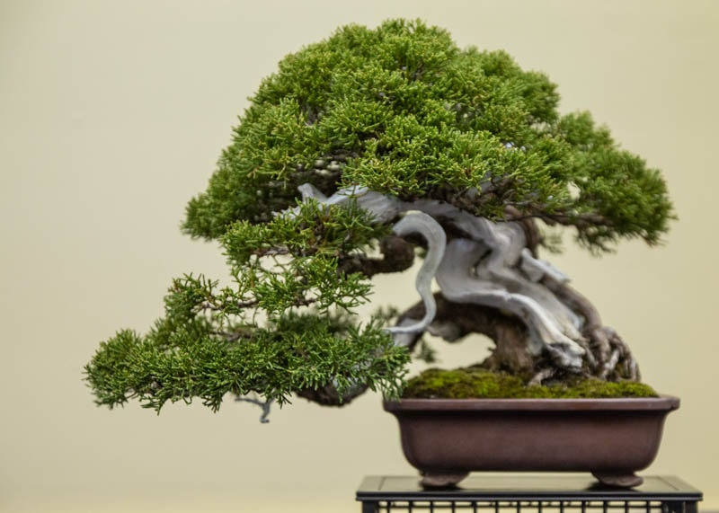

Bonsai Bliss
Jade Plant
Jade Plant is a succulent tree form plant that thrives on modest inattention.
Read More

Bonsai Bliss
Golden Gate Ficus
In the ficus family, the Golden Gate variety is the best for growing indoors.
Read More